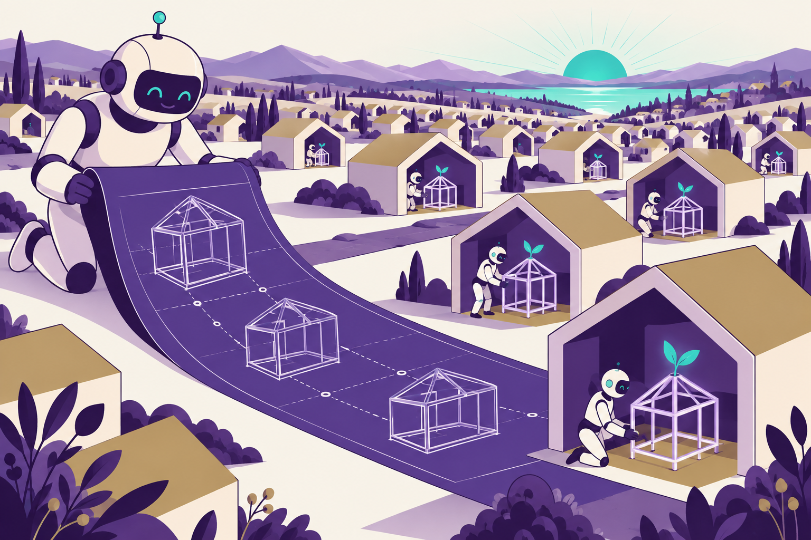

<link rel="stylesheet" href="../shared/slide-base.css">
<section data-slide="28-future-directions" aria-label="Future directions" class="slide dark rain-texture" data-presenter="both">
  <div class="accent-bar-top"></div>
  <div class="content">
    <p class="eyebrow">What we'd like to test next</p>
    <h1>What we still need to find out</h1>
    <ol class="cards"><li><strong>A setup skill</strong><span>Could a skill help set up a new or existing repo, with a maintainer reviewing its work?</span></li><li><strong>Models for research tasks</strong><span>Which models and agent tools work well on real science tasks with this repo setup?</span></li><li><strong>Scientific verification</strong><span>What can a skill check about the science, and where would it need more tools?</span></li><li><strong>Docs from project memory</strong><span>Could the same notes power a docs site, with checks that keep it consistent?</span></li><li><strong>Agents that update the notes</strong><span>Can agents record useful findings? What evals would catch bad additions?</span></li><li><strong>Time spent on each task</strong><span>What do LLMoxie traces tell us about where agents spend their effort?</span></li></ol>
    
    <p class="source">This is a proof of concept. We need evidence from more research projects before we know how well it carries over.</p>
  </div>
  <style>
    
    section[data-slide="28-future-directions"] { background: linear-gradient(135deg, var(--color-purple-950), var(--color-purple-900)); padding: var(--space-16) var(--space-20); }
    section[data-slide="28-future-directions"] .content { position: relative; z-index: var(--z-raised); display: flex; flex-direction: column; width: 100%; height: 100%; }
    section[data-slide="28-future-directions"] h1 {
      font-family: var(--font-display); font-size: var(--slide-title); font-weight: var(--font-extrabold);
      letter-spacing: var(--tracking-tight); line-height: var(--leading-tight); color: var(--text-brand);
      margin: var(--space-2) 0 var(--space-6);
    }
    section[data-slide="28-future-directions"] p, section[data-slide="28-future-directions"] li { font-size: var(--slide-body); line-height: var(--leading-relaxed); color: var(--text-primary); }
    section[data-slide="28-future-directions"] .lead { font-size: var(--slide-lead); }
    section[data-slide="28-future-directions"] .muted { color: var(--text-secondary); }
    section[data-slide="28-future-directions"] .source { margin-top: auto; padding-top: var(--space-4); }
    
    section[data-slide="28-future-directions"] { background: linear-gradient(135deg, var(--color-purple-950), var(--color-purple-900)); }
    section[data-slide="28-future-directions"] h1 { color: var(--text-primary); }
    section[data-slide="28-future-directions"] .cards { list-style: none; flex: 1; display: grid; grid-template-columns: repeat(3, 1fr); gap: var(--space-5); align-content: center; position: relative; z-index: 1; }
    section[data-slide="28-future-directions"] .backdrop { position: absolute; right: 0; bottom: 0; width: 40%; opacity: 0.09; pointer-events: none; z-index: 0; }
    section[data-slide="28-future-directions"] .cards li { background: rgba(255,255,255,0.06); border: 1px solid rgba(255,255,255,0.12); border-left: 4px solid var(--color-teal-500); border-radius: var(--radius-md); padding: var(--space-4) var(--space-5); }
    section[data-slide="28-future-directions"] .cards strong { display: block; font-family: var(--font-display); font-size: var(--slide-body); color: var(--text-primary); margin-bottom: var(--space-1); }
    section[data-slide="28-future-directions"] .cards span { display: block; font-size: var(--slide-body); line-height: var(--leading-normal); color: var(--text-secondary); }
    section[data-slide="28-future-directions"] .source { color: var(--text-secondary); position: relative; z-index: 1; }
  </style>
</section>
